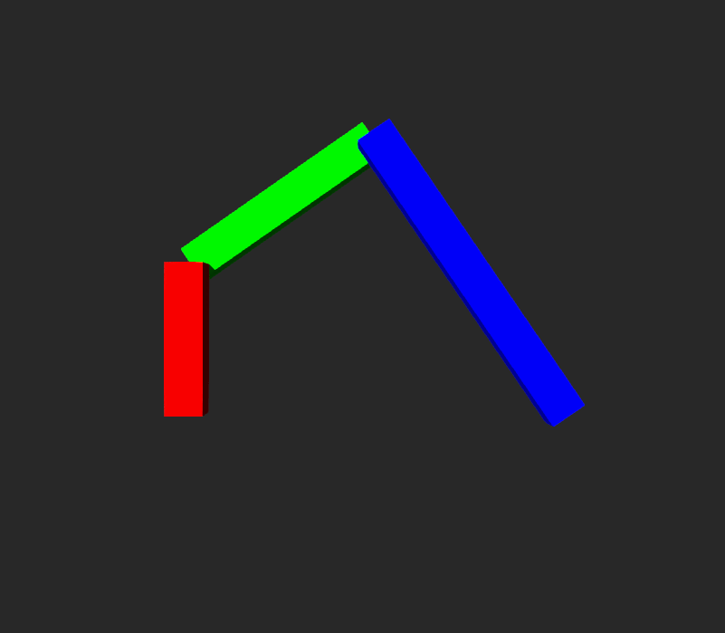
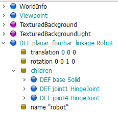
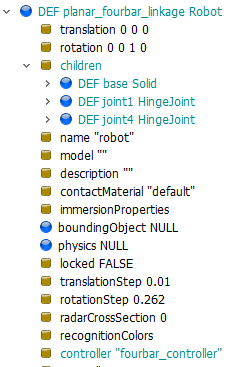
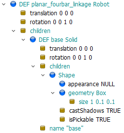
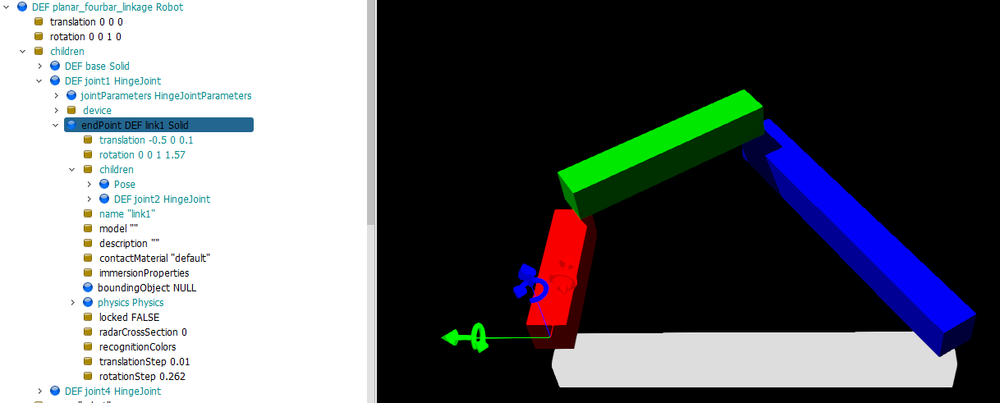
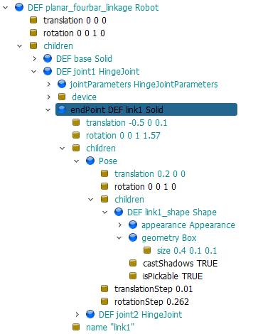
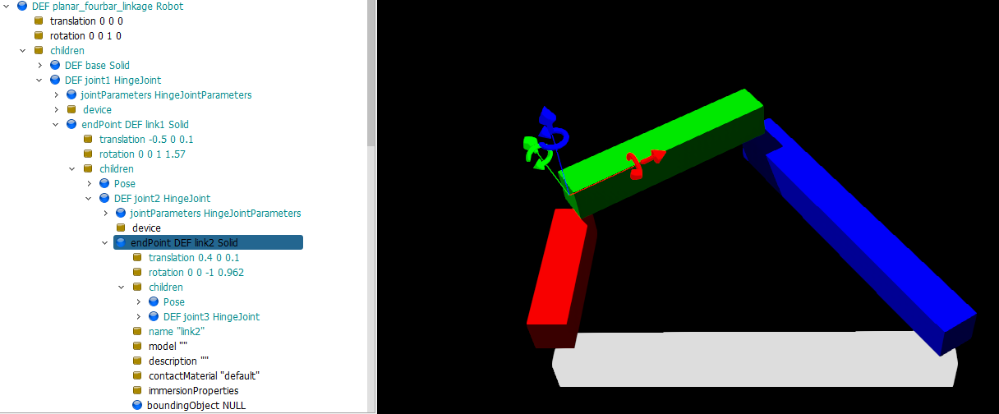
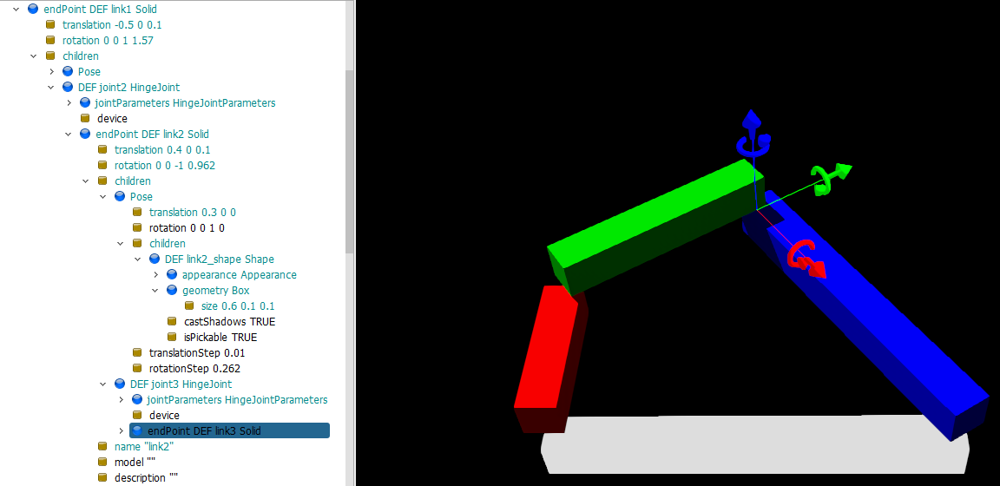
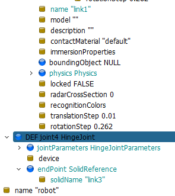

w4 <<
Previous Next >> task5
w5
內容一:
cadlab 網路設定範例: account_network_setup.7z
內容二:
接下來, 我們將說明如何在 Webots 中利用簡單的 box 物件建立 link, 利用 HingeJoint 建立 旋轉軸, 並且利用 Python controller 程式控制 link 的旋轉, 以下的模擬場景為可分別針對 link1, link2, link3 控制旋轉的 Open chain 運動模型, 請各組接續完成 Closed chain 的 box 四連桿運動場景. 完成後請詳細說明各連接桿與連接軸的設定步驟, 將說明以及操作影片分別放入個人與分組的倉儲及網頁中.
cd2025_box_fourbar.zip
平面四連桿的尺寸設計: 固定桿長度為 1m, 主動旋轉桿長度為 0.4m, 第二旋轉桿長度為 0.6m, 第三旋轉桿長度為 0.9m.
工具: Webots R2025a, Solvespace 3.1, Python 3.13.2, 可攜程式環境 wcm2025
希望完成的模擬結果如下:

https://cyberbotics.com/doc/guide/introduction-to-webots
What is Webots?
Webots is a professional mobile robot simulation software package. It offers a rapid prototyping environment, that allows the user to create 3D virtual worlds with physics properties such as mass, joints, friction coefficients, etc.
The user can add simple passive objects or active objects called mobile robots. These robots can have different locomotion schemes (wheeled robots, legged robots, or flying robots). Moreover, they may be equipped with a number of sensor and actuator devices, such as distance sensors, drive wheels, cameras, motors, touch sensors, emitters, receivers, etc.
Finally, the user can program each robot individually to exhibit the desired behavior. Webots contains a large number of robot models and controller program examples to help users get started.
Webots also contains a number of interfaces to real mobile robots, so that once your simulated robot behaves as expected, you can transfer its control program to a real robot like e-puck, DARwIn-OP, Nao, etc. Adding new interfaces is possible through the related system.
Webots Simulation:
A Webots simulation is composed of following items:
A Webots world file (.wbt) that defines one or several robots and their environment. The .wbt file does sometimes depend on external PROTO files (.proto) and textures.
One or several controller programs for the above robots (in C/C++/Java/Python/MATLAB).
An optional physics plugin that can be used to modify Webots regular physics behavior (in C/C++).
What is a world?
A world, in Webots, is a 3D description of the properties of robots and of their environment. It contains a description of every object: position, orientation, geometry, appearance (like color or brightness), physical properties, type of object, etc.
Worlds are organized as hierarchical structures where objects can contain other objects (like in VRML97).
For example, a robot can contain two wheels, a distance sensor and a joint which itself contains a camera, etc.
A world file doesn't contain the controller code of the robots; it only specifies the name of the controller that is required for each robot. Worlds are saved in ".wbt" files. The ".wbt" files are stored in the "worlds" subdirectory of each Webots project.
What is a Controller?
A controller is a computer program that controls a robot specified in a world file.
Controllers can be written in any of the programming languages supported by Webots: C, C++, Java, Python or MATLAB.
When a simulation starts, Webots launches the specified controllers, each as a separate process, and it associates the controller processes with the simulated robots.
Note that several robots can use the same controller code, however a distinct process will be launched for each robot.
Some programming languages need to be compiled (C and C++) other languages need to be interpreted (Python and MATLAB) and some need to be both compiled and interpreted (Java).
For example, C and C++ controllers are compiled to platform-dependent binary executables (for example ".exe" under Windows).
Python and MATLAB controllers are interpreted by the corresponding run-time systems (which must be installed).
Java controller need to be compiled to byte code (".class" files or ".jar") and then interpreted by a Java Virtual Machine.
The source files and binary files of each controller are stored together in a controller directory. A controller directory is placed in the "controllers" subdirectory of each Webots project.
What is a Supervisor Controller?
The Supervisor controller is the controller of a Robot whose supervisor field is set to TRUE, it can execute operations that can normally only be carried out by a human operator and not by a real robot.
The Supervisor controller can be written in any of the above mentioned programming languages. However, in contrast with a regular Robot controller, the Supervisor controller will have access to privileged operations. The privileged operations include simulation control, for example, moving the robots to a random position, making a video capture of the simulation, etc.
Starting Webots:
start.bat contains setup for Webots:
REM for Webots
set PYTHON_PATH=%Disk%:\Python313
REM for webots
set path_webots=%Disk%:\Webots_2025a\msys64\mingw64\bin;%Disk%:\Webots_2025a\msys64\usr\bin
path=%Disk%:;%path_python%;%path_git%;%path_copsim%;%path_msys2%;%path_miketex%;%path_flutter%;%path_node%;%path_tcc%;%path_postgresql%;%path_range%;%path_lua%;%path_core%;%path_putty%;%path_vscode%;%RUST_PATH%;%path_erlang%;%path_nodejs%;%path_haskell%;%path_scite%;%path_xsltproc%;%path_gnuplot%;%path_openssl%;%path_poppler%;%path_webots%;%path_blender%;%path%;
Therefore, under portable system dos windows, key in "webotsw" to start Webots.
User Interface:
https://cyberbotics.com/doc/guide/the-user-interface
w5_boomer.7z
fourbar_box.7z
1.

2.

3.

4.

5.

6.

7.

8.

對 link1 施以 Torque 的 box 四連桿模擬場景與控制程式: cd2025_box_fourbar_w5.7z
fourbar_box_w5.7z
w4 <<
Previous Next >> task5